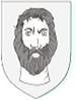

255501548 Johannes Holck af Ejrsböl
Blev ca 56 år.

Född:
omkring 1329 Ejrsböl, Danmark.
Död:
omkring 1385 Udbyneder, Randers, Danmark.
Barn med ?
Barn:
Personhistoria
1329?
Födelse omkring 1329 Ejrsböl, Danmark
1385?
Död omkring 1385 Udbyneder, Randers, Danmark